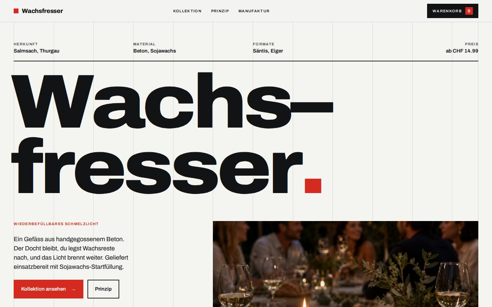
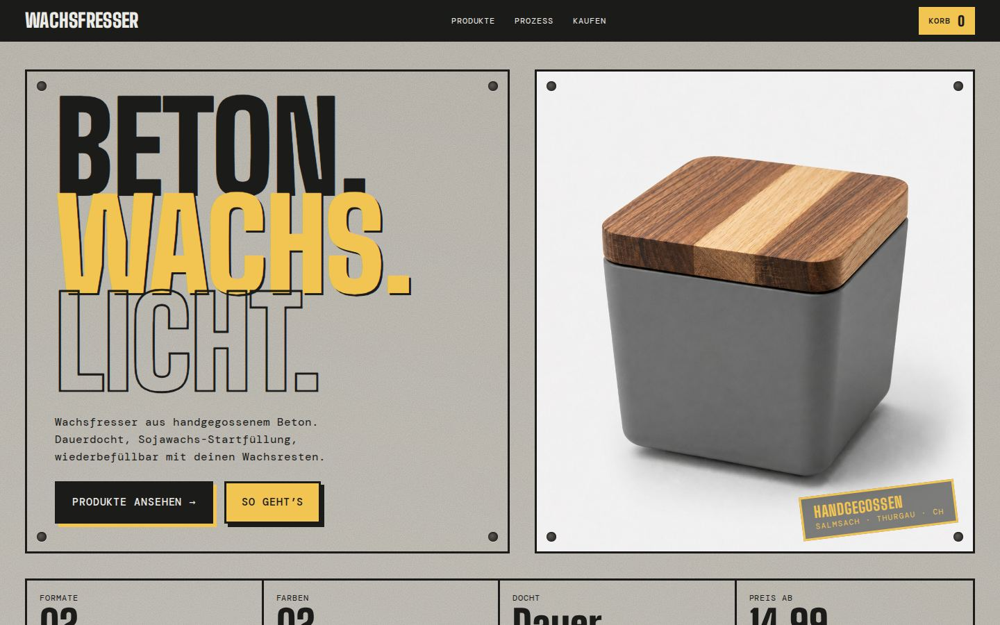
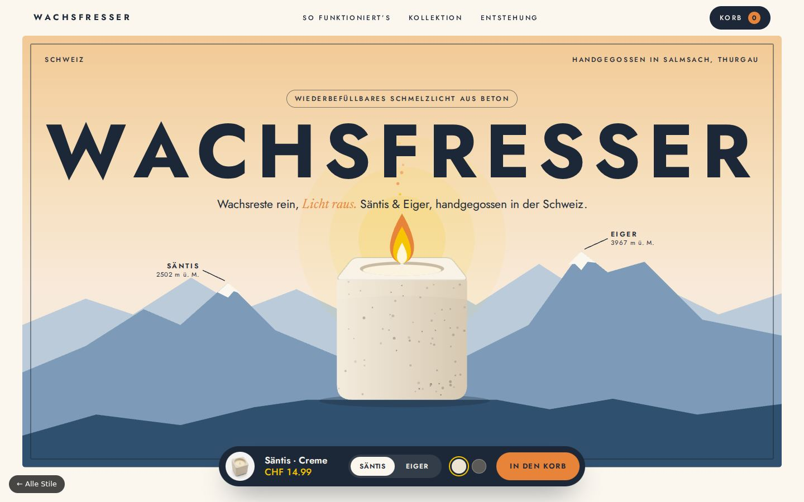
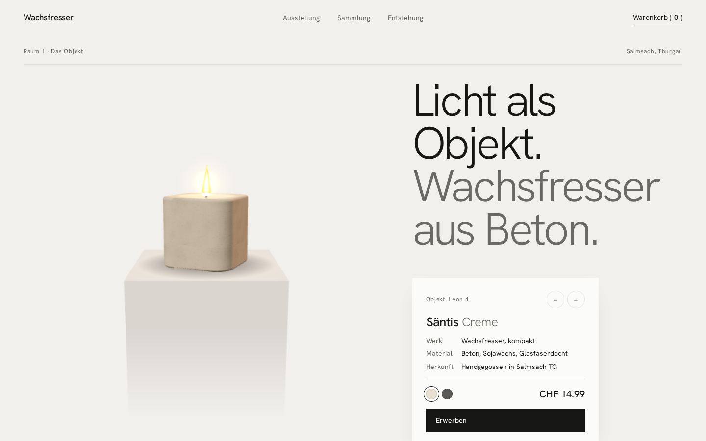

Schweizer Raster
Strenges 12-Spalten-Raster, grosse Groteskschrift und Signalrot. Die Kollektion steht wie ein Fahrplan in einer Tabelle, beim Überfahren folgt ein Produktbild dem Cursor.
Studie öffnen →
Beton Brut
Sichtbeton-Tafeln mit Ankerlöchern, schmale Plakatschrift und Wachsgelb als Akzent. Produkte werden beim Scrollen „gegossen“, der Prozess läuft horizontal durch.
Studie öffnen →
Alpenplakat
Schweizer Reiseplakat mit dem Wachsfresser als Hauptmotiv. Wachsreste fallen hinein, die Flamme zündet und folgt der Maus. Beim Scrollen zeigt eine Szene, wie aus Resten wieder Licht wird.
Studie öffnen →
Galerie
Heller Ausstellungsraum. Der Wachsfresser steht in 3D auf einem Sockel, daneben ein Wandschild mit Werkangaben. Die Sammlung hängt gerahmt an der Wand, ein Spotlight folgt der Maus.
Studie öffnen →